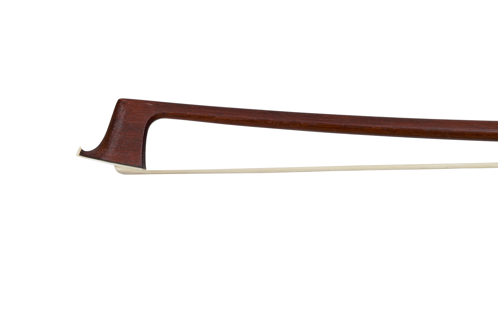
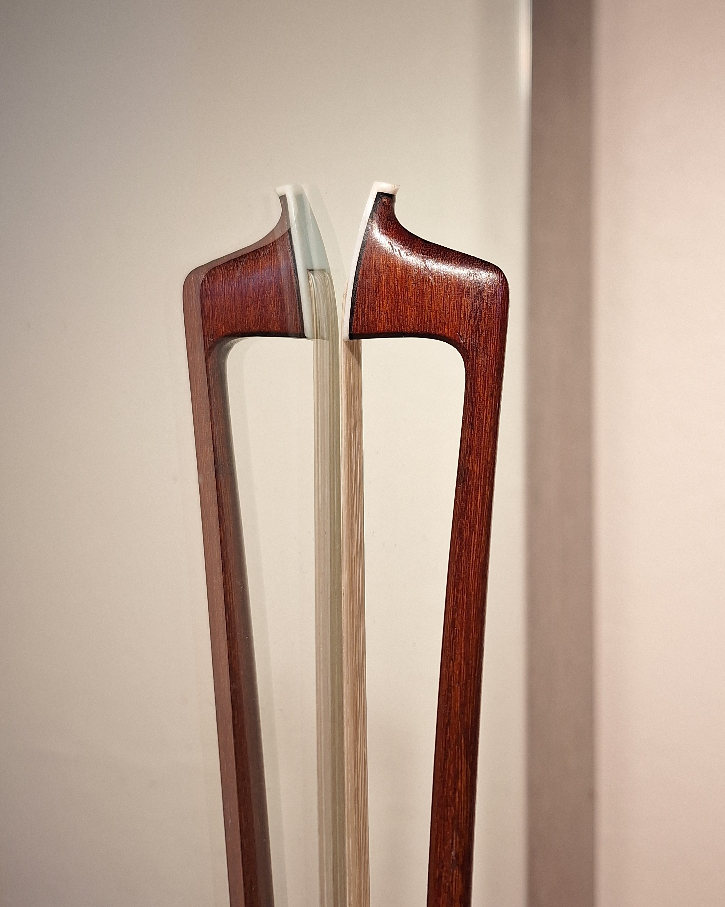

Specialists in English bows, traders in all fine string bows. Appraisal and other services available on request.
London & Cambridge
St Bride's was established out of a desire to foreground the best of English and German bow making at an accessible entry point. We take our name from St Bride's Church on London's Fleet Street, the resting place of Edward Dodd (1705-1810), bowmaker and father of the legendary John Dodd (1752-1839). Despite largely producing unbranded (and therefore unattributable) bows, Edward Dodd is credited as doing a great deal to improve the English bow, laying the groundwork for his son, 'the English Tourte'.
Every bow that passes through our hands is assessed for maker, condition and playing quality before being offered for sale. We work, above all else, with players, and we are always happy to talk through a bow, its individual quality and history before you come to a decision.

A strong stick from a good German workshop. Rehaired in September 2026 with a new faceplate and nickel-silver lapping.
Written valuations for insurance, probate, or sale, covering maker attribution, condition and current market value. At St Bride's we have developed proprietary technology for the detailed analysis of bow camber and other features, to better establish attribution.
We buy bows outright or sell on your behalf, and are always looking to acquire fine examples of English and German making.
Rehairs carried out by a trusted partner to a high standard, turned around promptly.
We can come to you, anywhere in London, Cambridge or the South East, for appraisals, trials, or just to have a chat about a bow. We offer a hand delivery service for bows above a particular value.
Book a session to try bows in person before committing to a purchase. We also offer lengthy trial periods (subject to terms and conditions).
For any buying, selling, or appraisal enquiries, write to us and we will get back to you.
Send an emailHear first about new bows as they are listed.